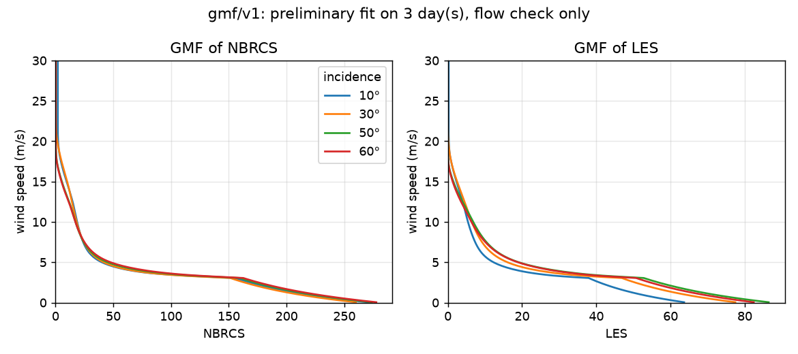
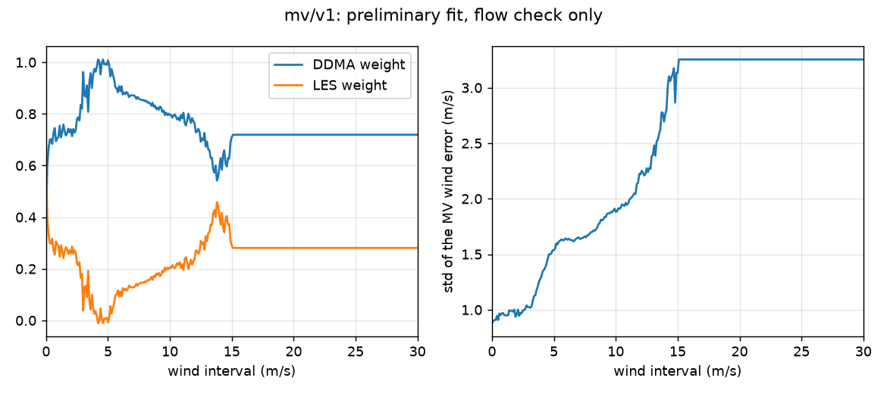
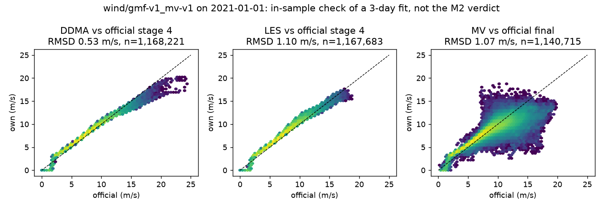

GMF e estimador MV (marco M2)¶
Etapas 4 e 5 do ATBD: transformar os observáveis (NBRCS e LES) em vento com tabelas ajustadas por nós e combinar os dois ventos pelo estimador de mínima variância. É também o método que o documento do INPE descreve para o produto do Amazonia-1B (versão FDS).
flowchart LR
P["points<br/>NBRCS, LES, incidência"] --> G["GMF por observável<br/>e ângulo de incidência"]
E["ERA5<br/>vento no ponto"] --> G
G --> W1["wind_ddma<br/>(de NBRCS)"]
G --> W2["wind_les<br/>(de LES)"]
W1 --> M["MV: média ponderada<br/>por intervalo de vento"]
W2 --> M
M --> V["wind_mv"]GMF por CDF matching¶
Para cada observável e cada ângulo de incidência de 1° (70 faixas), a função de transferência liga o NBRCS (ou o LES) ao vento igualando as distribuições acumuladas: a CDF empírica do observável das amostras daquela faixa é casada com a CDF do vento ERA5 das mesmas amostras. A tabela guarda o vento para 700 níveis do observável.

Ajuste preliminar com 3 dias de 2021, 3,7 milhões de amostras, só para validar o fluxo. A curva cai com o NBRCS: sinal mais forte significa mar mais calmo. Os parâmetros ficam em meta.json (n_obs_bins = 700, suavização de 10° em incidência e de 3 m/s, mínimo de 1000 amostras por faixa).
Alternativas e escolhas¶
| Questão | Alternativas | Escolha e motivo |
|---|---|---|
| Forma da função | Ajuste paramétrico (Weibull) | CDFs empíricas: é o que o ATBD 5.4.1 pede e não exige parâmetros ajustados |
| Dependência | Também do RCG (variante do artigo de 2020) | Só do ângulo de incidência, como no produto v3.2; o RCG fica como extensão possível |
| CDF do vento | Uma CDF global | CDF do vento por faixa de incidência, das amostras daquela faixa: uma global misturaria geografias com incidências diferentes. O ATBD não diz qual; esta é a leitura consistente |
| Velocidade do ERA5 | Interpolar u10 e v10 e depois a norma | Calcula a velocidade na grade e depois interpola: interpolar as componentes reduz a velocidade onde a direção gira |
| Memória | Guardar histogramas por dia | Acumuladores em fluxo: somas de poucas centenas de KB, uma leitura dos dados e sem etapa extra em disco |
| Período de treino | Parâmetro do job | Sempre lido de Settings: um parâmetro permitiria ajustar com o período de teste por engano |
Estimador de mínima variância¶
Cada amostra tem dois ventos, wind_ddma e wind_les. O MV os combina com pesos que somam 1, por intervalo de vento de 0,1 m/s, escolhidos para minimizar a variância do resultado. Os pesos saem das variâncias e da correlação dos dois erros contra o ERA5.

Mesmo ajuste preliminar. Com 3 dias não há amostras suficientes acima de ~15 m/s: esses intervalos copiam o vizinho estimável mais próximo, o que mantém a soma dos pesos em 1. Com o ano de 2021 inteiro isso deve melhorar.
Alternativas e escolhas¶
| Questão | Alternativas | Escolha e motivo |
|---|---|---|
| Pesos da média que define o intervalo | 80 % DDMA / 20 % LES; 50 % / 50 % | ddma_weight é parâmetro, com 0,8 como padrão (texto do ATBD 5.6.1). O ATBD é inconsistente: a legenda da Fig. B4 diz 50/50. A divergência fica registrada em meta.json e vai como pergunta à equipe do CYGNSS |
| Subtrair o viés | Subtrair | Não: o artefato do ATBD é uma tabela de coeficientes. O viés é guardado só para diagnóstico |
| Intervalo sem amostras | Deixar vazio | Copia o mais próximo estimável, mantendo Σm = 1 |
| Critério de aprovação do M2 | Contra o vento oficial final | Contra o vento oficial da etapa 4 dos dois lados (wind_ddma × fds_nbrcs_wind_speed, wind_les × fds_les_wind_speed): o oficial final já inclui as etapas 6 a 8 |
Resultado preliminar¶

Com o ajuste de 3 dias aplicado ao próprio dia 2021-01-01 (portanto dentro da amostra, não é o veredito):
| Comparação | RMSD |
|---|---|
| DDMA × oficial da etapa 4 | 0,53 m/s |
| LES × oficial da etapa 4 | 1,10 m/s |
| MV × oficial final | 1,07 m/s |
O critério do M2 é RMSD < 0,5 m/s nos dois primeiros, em 2022, com o ano de treino completo. O DDMA já está perto mesmo com 3 dias; o LES ainda não, e o MV contra o oficial final não é critério porque o oficial final inclui o estado do mar e o debias (M3).
O que falta
O veredito do M2 depende do ERA5 e do L2 de 2021 completos (download em andamento) e do L2 de 2022.